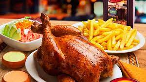

Pagina principal
Pollo a la Brasa

Un pollo a la Brasa con receta peruana
Ingredientes
Un pollo entero
papa
Lechuga
Rocoto
Preparacion
Aderezar el polllo
Cortar y freir la papa
Colocar el pollo en el horno